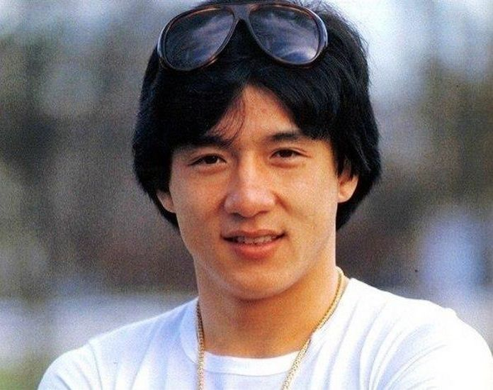

У 8 років Джекі і його товариш Саммо Хунг із «Сімки маленьких» знялися у фільмі «Великий і малий Вонг Тін Бар» (1962), де Лі-Лі Хуа грала його матір. За цю роль він отримав гонорар у розмірі 12 доларів США. Також хлопчик знявся в фільмі «Лян Шаньбо та Чжу Інтай» (1963) та виконав маленьку роль в фільмі Кінга Ху «Випий зі мною» (1966).
Брюс Лі і Джекі Чан у фільмі «Вихід Дракона» (1973)
У 1971, після появи в іншому фільмі Конга Фу — «Торкнися Дзена», Джекі почав дорослу кар'єру справжнього актора. Спочатку він підписав контракт з кінокомпанією Chu Mu's Great Earth і уже в 17 років юнак працював каскадером у фільмах з Брюсом Лі «Кулак люті» і «Вихід Дракона».Докладніше